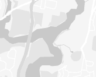
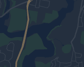
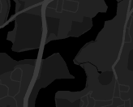
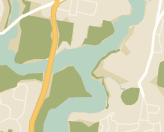
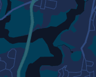
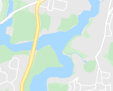

Trở về
Công cụ
Đo đạc trên bản đồ
Bắt đầu
Kết thúc
Click
vào các điểm trên bản đồ để bắt đầu đo đạc khoảng cách và diện tích.
Tổng khoảng cách:
0
Tổng diện tích:
0
Thay đổi bản đồ nền

Silver

Night

Dark

Retro

Aubergine

Standard